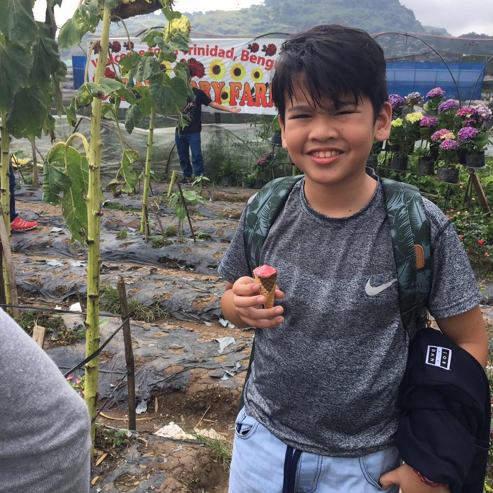
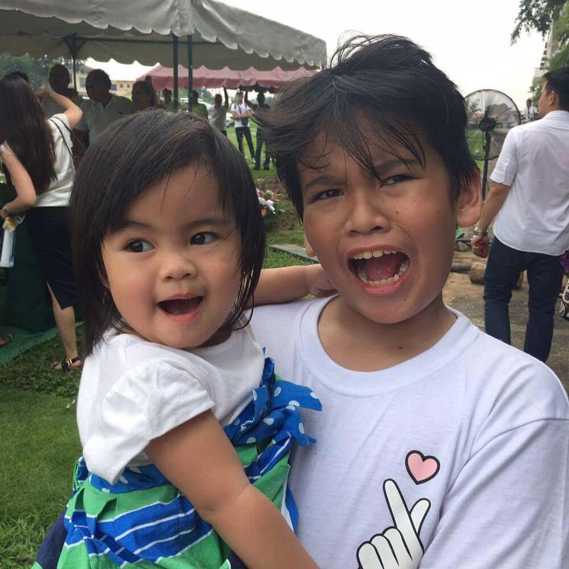
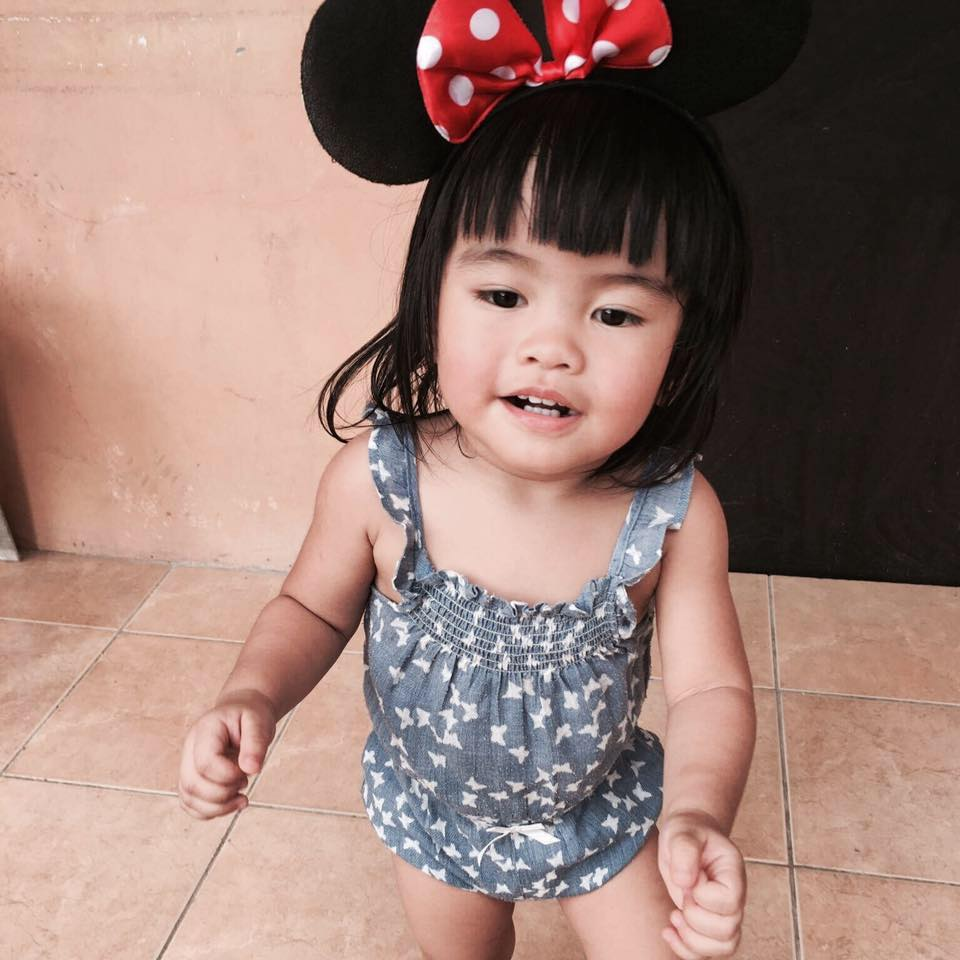

The name of my eldest sister is Zarah.
She is 13 years older than me.
She has a son that is 12 years old already.
I was only five years old when she gave birth to my nephew named Xean.
She is a single mom and she is working in Qatar.
ANN LORRAINE LAGRADA-DELA CRUZ
My 2nd sister is already married.
She has a daughter named Vinni.
They are living in Bacoor, Cavite
but for some reasons they are currently living in Cebu.
She is 11 years older than me.
Her husband is a casino dealer
MARK KEVIN LAGRADA

He is my only brother.
He is a Seaman too like my father.
We are 6 years apart.
We are sometimes mistaken as twins
because we really resemble each other
Even though we have big age gaps,
I can say that we are all close with each other.
We may be far from each other now
but we communicate through social media sites like facebook.
XANDER NASH LAGRADA-MARTINEZ & LIEN VENISCE DELA CRUZ
  
Xander Nash a.k.a Xean is the son
of my eldest sister.
He is 12 years old and is currently in 6th grade
Lien is the daughther of my second sister.
She is so cute.
She will turn 2 this December 6.
We call her "Vinni","Vinnipot" or
sometimes "Vinni Patootie." as short for Venisce.